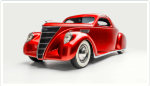

- Az első „autót” ágyú vontatásra használták és 3 km/órás sebességgel tudott száguldani.
Nicolas-Joseph Cugnot francia tüzértiszt, mérnök és feltaláló 1796-ban készítette el ezt az önjáró,
gőzgéppel hajtott szerkezetet.
- 1899. január 3-án a New York Times hasábjain használták először az „autómobil” kifejezést.
- A futószalag alapötlete az amerikai autógyártó Ransom Eli Olds fejéből pattant ki,
az első tömeggyártású gépkocsi előállítása is hozzá kötődik, 1901-ben indult meg
az Oldsmobile Curved Dash sorozatgyártása.
- A futószalag elmélet sikeres kivitelezésének babérjai Henry Fordot illetik,
forradalmi találmánya 1913-ban a híres Ford T-modell gyártási idejét 12 óráról 93 percre
csökkentette.
Ez lehetővé tette a tömeggyártát, melynek hála a Ford T-modell ára jelentősen lecsökkent:
1924-ben már 260 dollárért vehettek Fordot a száguldás szerelmesei.
- 1903-ig hagymával és répával tisztították az autók üvegeit (már amennyire voltak).
Ekkor azonban Mary Anderson (igen bizony, egy hölgy!) találmánya,
az ablaktörlő gyorsan véget vetett a zöldségek ilyetén való alternatív felhasználásának.
Más jelentős autóipari találmányok is hölgyekhez köthetők: az első hangtompító, az irányjelző
és a fűtés is női találmány,
legalábbis részben.
- Ha már a hölgyeknél tartunk, a világ első „túra autósa” is nő volt: Bertha Benz elkötötte férje,
Karl Benz (ő volt az első tényleg gépkocsinak nevezhető jármű megalkotója)
autóját 1888-ban és megtett vele 106 kilométert ezzel bizonyítván, hogy az autó nemcsak városi
furikázásra alkalmas.
- Az első autórádiót a Motorola alapítóinak köszönhetjük, akik még lemezjátszót is beépítettek egy
járműbe
(bár minden különösebb siker nélkül).
Az első autórádió 1930-ban született meg és nyilvánvalóan extra tartozéknak számított: 130 dollárba
került.
- 1894-ben rendezték a világ első autóversenyét. A győztes 19 km/h-s átlagsebességgel száguldva, 6
óra 48 perc
alatt tette meg a Párizs és Rouen közötti 126 km-es távot.
- Magyarországon Hacsek Béla optikus volt az első autótulajdonos,
1895-ben vásárolt egy Benz Velo gépkocsit, mely 1,5 lóerős volt és 20 km/óra volt a végsebessége.
Sajnos

